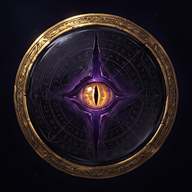

Politique de confidentialité
ABYSSAL — Le Bestiaire interdit · en vigueur au 21 octobre 2026
En bref : Pour jouer à ABYSSAL, tu crées un compte : ta partie y est liée et sauvegardée en ligne. Nous gardons ton adresse e-mail, ton pseudo et ta sauvegarde pour la retrouver sur un autre appareil et afficher les classements. Pas de publicité, pas de pistage, aucune revente de données. Tu peux supprimer ton compte et toutes ses données depuis le jeu, à tout moment.
1. Sur ton appareil
Ta progression (cartes, équipe, réglages) est enregistrée dans la mémoire de ton appareil, avec une copie de secours au même endroit, pour que tu puisses continuer à jouer sans connexion. Elle est envoyée sur ton compte dès que tu es connecté à Internet (voir la partie 2). Quand tu te déconnectes, ta partie est d’abord envoyée sur ton compte, puis effacée de l’appareil.
Dans l’application, si tu l’acceptes, le jeu programme des rappels sur ton téléphone (booster gratuit du jour, « à toi de jouer » dans une partie en ligne). Ils sont préparés par le téléphone lui-même : aucune donnée n’est envoyée pour cela. Tu peux les couper dans Réglages → Jeu → Notifications.
Quand l’application est ouverte et connectée à Internet, elle peut afficher le nombre de joueurs en ligne. Pour cela, un signal anonyme (sans nom, sans identifiant de compte) est échangé avec notre serveur, uniquement le temps de la connexion.
2. Ton compte
Un compte est nécessaire pour jouer : ta progression est liée à ton pseudo et à ton adresse e-mail. Il sert à sauvegarder ta partie en ligne, à la retrouver sur un autre appareil, à jouer avec d’autres joueurs et à apparaître dans les classements. Il contient :
| Donnée | Pourquoi | Qui peut la voir |
|---|---|---|
| Adresse e-mail et mot de passe (chiffré) | Te connecter, confirmer ton compte, réinitialiser ton mot de passe | Toi seul |
| Sauvegarde de partie | Retrouver ta progression sur un autre appareil | Toi seul |
| Profil : pseudo, avatar, titre, niveau, nombre de cartes possédées | Profil public et classements | Les autres joueurs |
| Scores : Épreuves du jour, Tirage des Ombres, victoires du mois dans les jeux en ligne | Classements | Les autres joueurs, avec ton pseudo |
| Parties en ligne (Duels des Sceaux, Pacte, Enchères, Cryptes) : adversaire, coups joués, délais, résultat ; bilan de victoires contre chacun de tes amis | Faire jouer les parties entre joueurs, compter le temps de chaque coup, verser les récompenses | Les deux joueurs de la partie (les cartes cachées restent cachées pour l’adversaire) |
| Amis : liste de tes amis et des demandes d’ami, et une fiche de jeu (cartes de ta collection, succès, titres, statistiques de jeu) | Te permettre d’ajouter des amis et de voir mutuellement vos collections | Ta collection complète : tes amis uniquement (seulement les joueurs que tu as acceptés) |
| Profil de joueur : pseudo, portrait, cadre, titre, niveau, vitrine (3 cartes au plus), nombre de créatures, succès et statistiques de jeu | Permettre aux autres joueurs de voir ton profil en touchant ton pseudo (classements, parties en ligne) | Les joueurs connectés |
| Le Pari des Boosters : défis lancés ou relevés (type et nombre de boosters, mise, cartes tirées, résultat) | Faire jouer les défis entre joueurs et te donner les cartes gagnées | Un défi ouvert à tous montre ton pseudo et ton avatar aux autres joueurs ; le détail d’un duel n’est visible que par ses deux joueurs |
| Signalements de pseudos : qui a signalé, quel pseudo, quel motif, quand | Masquer les pseudos insultants, modérer les classements | L’équipe d’ABYSSAL uniquement (jamais le joueur signalé) |
Choisis un pseudo qui ne permet pas de t’identifier : il est visible par tous, et il est définitif une fois choisi. Tu peux retirer un ami à tout moment : il ne voit alors plus ta collection complète.
3. Pseudos et signalements
Les pseudos insultants sont refusés. Touche le pseudo d’un joueur (classement, partie en ligne, demande d’ami) pour ouvrir son profil : tu peux alors le signaler ou le masquer pour toi (le masquage reste sur ton appareil). Un pseudo signalé par plusieurs joueurs est remplacé automatiquement par un nom neutre, et son propriétaire doit en choisir un autre. Pour toute réclamation, écris-nous à l’adresse ci-dessous.
4. Ce que nous ne faisons pas
- Aucune publicité, aucun outil de mesure d’audience ni de pistage publicitaire.
- Aucune revente ni location de tes données.
- Aucune collecte de ta position, de tes contacts, de tes photos ou de ton micro.
- Aucun achat avec de l’argent réel dans la version actuelle du jeu.
5. Où sont stockées les données du compte
Les comptes, sauvegardes, profils et classements sont hébergés par Supabase, notre prestataire d’hébergement de base de données, qui les traite pour notre compte. Les accès sont protégés : chaque joueur ne peut lire que ses propres données privées. Ta progression est tenue par le serveur du jeu : chaque action de jeu (ouvrir un booster, gagner un combat, encaisser une récompense…) y est envoyée et vérifiée, pour empêcher la triche. Ces actions ne servent qu’à tenir ta partie à jour. Le jeu lui-même est servi par GitHub Pages, qui peut enregistrer des journaux techniques de connexion (comme l’adresse IP) pour assurer le service et sa sécurité.
6. Combien de temps
Les données de ton compte sont conservées tant que ton compte existe. Quand tu le supprimes, ton adresse e-mail, ta sauvegarde, ton profil et tes scores sont effacés immédiatement et définitivement.
7. Tes droits et la suppression du compte
Tu peux à tout moment consulter, corriger ou supprimer tes données. Pour supprimer ton compte et tout ce qui y est lié : Sanctuaire → Compte → Supprimer mon compte.
Tu n’as plus l’application ? Écris-nous depuis l’adresse e-mail de ton compte, avec l’objet « Suppression de compte » : ton compte, ton profil, ta sauvegarde en ligne et tes scores sont supprimés sous 30 jours, et nous te le confirmons par e-mail.
Pour toute question ou demande (accès, rectification, suppression, opposition), écris-nous à contact@abyssal-game.fr. Si tu résides dans l’Union européenne, tu peux aussi adresser une réclamation à l’autorité de protection des données de ton pays (en France, la CNIL).
8. Enfants
ABYSSAL n’est pas destiné aux enfants de moins de 13 ans et nous ne collectons pas sciemment leurs données. Si un parent pense qu’un enfant a créé un compte, il peut nous écrire pour le faire supprimer.
9. Modifications
Si cette politique change (par exemple si des achats intégrés sont ajoutés), la nouvelle version sera publiée sur cette page avec sa date d’entrée en vigueur.
10. Contact
Éditeur : ABYSSAL
Adresse de contact : contact@abyssal-game.fr